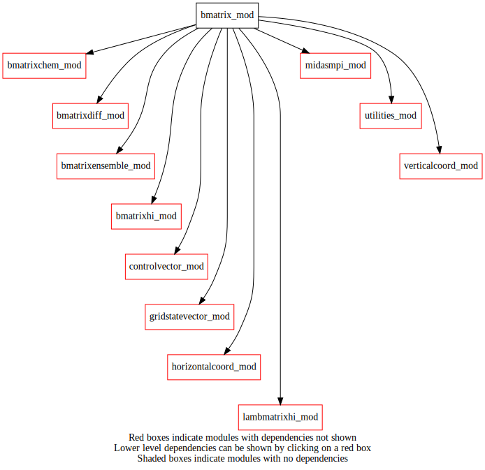
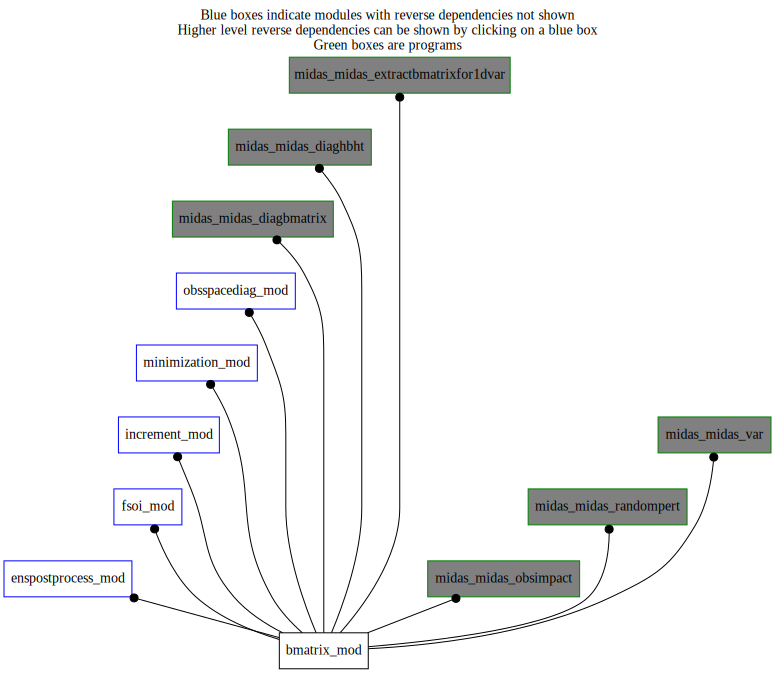

Dependency Diagrams:
 Direct Dependency Diagram¶
 Reverse Dependency Diagram¶
Description
MODULE BMatrix_mod (prefix=’bmat’ category=’2. B and R matrices’)
- Purpose
A higher-level module that takes care of calling subroutines in the lower-level modules bmatrixHI/lambmatrixHI and bmatrixEnsemble
- Comments
Considerations for ensemble-based and regional static covariances for constituents are not yet included.
Quick access
- Routines
bmat_expandtompiglobal(),bmat_expandtompiglobal_r4(),bmat_finalize(),bmat_reducetompilocal(),bmat_reducetompilocal_r4(),bmat_setup(),bmat_sqrtb(),bmat_sqrtbt()Needed modules
midasmpi_mod: MODULE midasMpi_mod (prefix=’mmpi’ category=’8. Low-level utilities and constants’)
bmatrixhi_mod: MODULE BmatrixHI_mod (prefix=’bhi’ category=’2. B and R matrices’)
bmatrixensemble_mod: MODULE BmatrixEnsemble_mod (prefix=’ben’ category=’2. B and R matrices’)
bmatrixchem_mod: MODULE BmatrixChem_mod (prefix=’bchm’ category=’2. B and R matrices’)
bmatrixdiff_mod: MODULE BmatrixDiff_mod (prefix=’bdiff’ category=’2. B and R matrices’)
controlvector_mod: MODULE controlVector_mod (prefix=’cvm’ category=’6. High-level data objects’)
verticalcoord_mod: MODULE verticalcoord (prefix=’vco’ category=’7. Low-level data objects’)
gridstatevector_mod: MODULE gridStateVector_mod (prefix=’gsv’ category=’6. High-level data objects’)
lambmatrixhi_mod: MODULE lamBMatrixHI_mod (prefix=’lbhi’ category=’2. B and R matrices’)
horizontalcoord_mod: MODULE HorizontalCoord_mod (prefix=’hco’ category=’7. Low-level data objects’)
utilities_mod: MODULE utilities_mod (prefix=’utl’ category=’8. Low-level utilities and constants’)Variables
Subroutines and functions
- subroutine bmatrix_mod/bmat_setup(hco_anl, hco_core, vco_anl)¶
- Purpose
To initialize the analysis Background term for the specific analysis configuration used.
- Arguments
hco_anl [struct_hco ,pointer]
hco_core [struct_hco ,pointer]
vco_anl [struct_vco ,pointer]
- Called from
epp_addrandompert(),midas_diagbmatrix,midas_diaghbht,midas_extractbmatrixfor1dvar,midas_obsimpact,midas_randompert,midas_var- Call to
utl_tmg_start(),bhi_setup(),lbhi_setup(),ben_setup(),bchm_setupch(),bdiff_setup(),utl_abort(),cvm_setupsubvector(),cvm_subvectorexists(),utl_tmg_stop()
- subroutine bmatrix_mod/bmat_sqrtb(controlvector, cvdim, statevector[, usefsofcst_opt[, statevectorref_opt]])¶
- Purpose
To transform model state from control-vector space to grid-point space.
- Arguments
controlvector (cvdim) [real ]
cvdim [integer ]
statevector [struct_gsv ]
- Options
usefsofcst_opt [logical ]
statevectorref_opt [struct_gsv ]
- Called from
epp_addrandompert(),fso_ensemble(),simvar(),inc_getincrement(),osd_calcinflation(),midas_diagbmatrix,midas_diaghbht,midas_extractbmatrixfor1dvar,midas_randompert- Call to
utl_tmg_start(),gsv_zero(),gsv_varnameslist(),gsv_allocate(),gsv_gethco(),gsv_getvco(),gsv_getdatakind(),cvm_getsubvector(),bhi_bsqrt(),lbhi_bsqrt(),utl_tmg_stop(),bchm_bsqrt(),bdiff_bsqrt(),ben_bsqrt(),gsv_3dto4d(),gsv_add(),gsv_deallocate()
- subroutine bmatrix_mod/bmat_sqrtbt(controlvector, cvdim, statevector[, usefsofcst_opt[, statevectorref_opt]])¶
- Purpose
To transform model state from grid-point space to error-covariance space.
- Arguments
controlvector (cvdim) [real ]
cvdim [integer ]
statevector [struct_gsv ]
- Options
usefsofcst_opt [logical ]
statevectorref_opt [struct_gsv ]
- Called from
fso_ensemble(),simvar(),midas_diagbmatrix,midas_extractbmatrixfor1dvar- Call to
utl_tmg_start(),gsv_varnameslist(),gsv_allocate(),gsv_gethco(),gsv_getvco(),gsv_getdatakind(),cvm_getsubvector(),gsv_copy(),gsv_3dto4dadj(),ben_bsqrtad(),utl_tmg_stop(),bdiff_bsqrtad(),bchm_bsqrtad(),bhi_bsqrtad(),lbhi_bsqrtadj(),gsv_deallocate()
- subroutine bmatrix_mod/bmat_finalize()¶
- Purpose
To release memory used by B matrices.
- Called from
- Call to
bhi_finalize(),ben_finalize(),bchm_finalize(),lbhi_finalize(),bdiff_finalize()
- subroutine bmatrix_mod/bmat_reducetompilocal(cv_mpilocal, cv_mpiglobal)¶
- Purpose
To distribute MPI_global control vector from task 0 to all tasks where the arguments are real(8)’s
- Arguments
cv_mpilocal (*) [real ,out]
cv_mpiglobal (*) [real ,in]
- Called from
epp_addrandompert(),hessianio(),midas_diagbmatrix,midas_diaghbht,midas_randompert- Call to
cvm_getsubvector(),cvm_getsubvector_mpiglobal(),bhi_reducetompilocal(),lbhi_reducetompilocal(),bchm_reducetompilocal(),bdiff_reducetompilocal(),ben_reducetompilocal()
- subroutine bmatrix_mod/bmat_reducetompilocal_r4(cv_mpilocal, cv_mpiglobal)¶
- Purpose
To distribute MPI_global control vector from task 0 to all tasks where the arguments are real(4)’s.
- Arguments
cv_mpilocal (*) [real ,out]
cv_mpiglobal (*) [real ,in]
- Called from
- Call to
cvm_getsubvector_r4(),cvm_getsubvector_mpiglobal_r4(),bhi_reducetompilocal_r4(),lbhi_reducetompilocal_r4(),bchm_reducetompilocal_r4(),utl_abort(),ben_reducetompilocal_r4()
- subroutine bmatrix_mod/bmat_expandtompiglobal(cv_mpilocal, cv_mpiglobal)¶
- Purpose
To gather control vector from all tasks to task 0 where the arguments are real(8)’s.
- Arguments
cv_mpilocal (*) [real ,in]
cv_mpiglobal (*) [real ,out]
- Called from
- Call to
cvm_getsubvector(),cvm_getsubvector_mpiglobal(),bhi_expandtompiglobal(),lbhi_expandtompiglobal(),bchm_expandtompiglobal(),ben_expandtompiglobal()
- subroutine bmatrix_mod/bmat_expandtompiglobal_r4(cv_mpilocal, cv_mpiglobal)¶
- Purpose
To gather control vector from all tasks to task 0 where the arguments are real(4)’s.
- Arguments
cv_mpilocal (*) [real ,in]
cv_mpiglobal (*) [real ,out]
- Called from
- Call to
cvm_getsubvector_r4(),cvm_getsubvector_mpiglobal_r4(),bhi_expandtompiglobal_r4(),lbhi_expandtompiglobal_r4(),bchm_expandtompiglobal_r4(),ben_expandtompiglobal_r4()
{kind=link}
{kind=link}